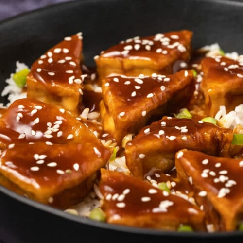

Teriyaki Soba

In Japan, where it gets plenty hot in the summer, cold soba noodles, served with a dipping sauce, are a common snack or light meal.
Ingredients
- Medium firm tofu
- Potato starch
- Cooking oil
- Teriyaki sauce
- Additional toppings: green onion, pickled red ginger, dried bonito flakes
How to make Teriyaki Soba
- Open the tofu package and start draining the tofu. If you drain for 20-30 minutes, it’s plenty. Cut the tofu into half-inch slices.
- Prepare a tray or a large dish with potato starch. Heat the oil over medium heat, and start dredging tofu in potato starch. Shake off any excess starch and place the tofu in the frying pan. Be patient as you pan-fry the tofu. Try not to keep flipping the tofu. Wait until one side is firmed up and nicely seared before you flip to cook on the other side.
- Once all sides of the tofu are evenly browned and crisp, pour in the teriyaki sauce. You should hear some nice sizzles from the hot frying pan. The moisture in the sauce will evaporate as the sauce thickens. Gently coat the tofu with the sauce.